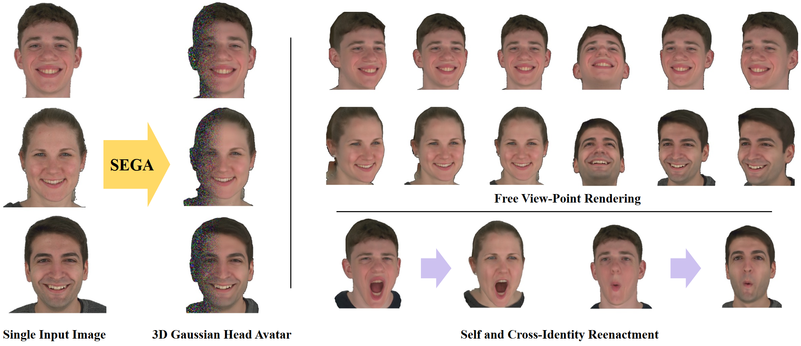
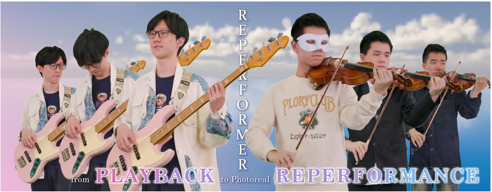

Zhuo Su | 苏卓
I am currently a Tech Lead and Researcher at ByteDance. My work mission is to capture and understand human-centric scenes in the real world, and digitalize humans, objects, and events for immersive applications in VR / AR. Prior to this, I joined Tencent as a Senior Researcher through the Special Recruitment Talents Program (技术大咖 ). Before entering the industry, I graduated from the Department of Automation at Tsinghua University, where I had the honor of being supervised by Qionghai Dai and Lu Fang, and collaborated closely with Yebin Liu and Lan Xu. |
Research
Interests
- Avatar Creation
- AIGC (3D/Motion)
- Performance Capture
- Neural Rendering
- Motion Capture
Services
- Conference Reviewer: CVPR, ICCV, NeurIPS, ICLR, ICML, AAAI, AAAI-AIA, SIGGRAPH ASIA, IEEE VR, 3DV, ACMMM, WACV, AISTATS, ...
- Journal Reviewer: IEEE TVCG, TMLR
- Program Committee Member: AAAI 2026 Conference, AAAI 2026 AI Alignment Track
- Workshop Organizer: SIGGRAPH 2025
Skills
- Python (Pytorch, ...), C & C++ (OpenGL, CUDA, ...), Matlab, LaTeX, ...
Let's Collaborate!
Publication
-
Topology-Aware Optimization of Gaussian Primitives for Human-Centric Volumetric Videos
Yuheng Jiang, Chengcheng Guo, Yize Wu, Yu Hong, Shengkun Zhu, Zhehao Shen, Yingliang Zhang, Shaohui Jiao , Zhuo Su, Lan Xu, Marc Habermann, Christian Theobalt
SIGGRAPH Asia 2025
We propose TaoGS, a framework that disentangles motion and appearance for coherent volumetric video under topological variation, with codec-friendly compression for scalable high-fidelity rendering.
-

SMGDiff: Soccer Motion Generation using Diffusion Probabilistic Models
Hongdi Yang, Chengyang Li, Zhenxuan Wu, Gaozheng Li, Jingya Wang, Jingyi Yu, Zhuo Su, Lan Xu
ICCV 2025
We introduce SMGDiff, a novel two-stage framework for generating real-time and user-controllable soccer motions. Our key idea is to integrate real-time character control with a powerful diffusion-based generative model, ensuring high-quality and diverse output motion.
-
Parametric Gaussian Human Model: Generalizable Prior for Efficient and Realistic Human Avatar Modeling
Cheng Peng, Jingxiang Sun, Yushuo Chen, Zhaoqi Su, Zhuo Su, Yebin Liu
arXiv 2025
We present PGHM, a generalizable and efficient framework that integrates human priors into 3DGS for fast and high-fidelity avatar reconstruction from monocular videos.
-
 SEGA: Drivable 3D Gaussian Head Avatar from a Single Image
Chen Guo*, Zhuo Su*‡ (Corresponding Author), Jian Wang , Shuang Li, Xu Chang, Zhaohu Li, Yang Zhao, Guidong Wang, Ruqi Huang‡
arXiv 2025
We propose SEGA, a novel approach for Single-imagE-based 3D drivable Gaussian head Avatar creation that combines generalized prior models with a new hierarchical UV-space Gaussian Splatting framework.
-

EnvPoser: Environment-aware Realistic Human Motion Estimation from Sparse Observations with Uncertainty Modeling
Songpengcheng Xia, Yu Zhang, Zhuo Su† (Project Lead), Xiaozheng Zheng, Zheng Lv, Guidong Wang, Yongjie Zhang, Qi Wu, Lei Chu, Ling Pei‡
CVPR 2025
We propose EnvPoser, a two-stage method using sparse tracking signals and pre-scanned environment from VR devices to perform full-body motion estimation and handle the multi-hypothesis nature with uncertainty-aware and environmental constraint integration.
-
 RePerformer: Immersive Human-centric Volumetric Videos from Playback to Photoreal Reperformance
Yuheng Jiang, Zhehao Shen, Chengcheng Guo, Yu Hong, Zhuo Su, Yingliang Zhang, Marc Habermann‡, Lan Xu‡
CVPR 2025
We present RePerformer, a Gaussian-based representation for high-fidelity volumetric video playback and re-performance. Via Morton-based parameterization, our method enables efficient rendering. A semantic-aware alignment module and deformation transfer enhance realistic motion re-performance.
-

EMHI: A Multimodal Egocentric Human Motion Dataset with HMD and Body-Worn IMUs
Zhen Fan*, Peng Dai*, Zhuo Su*, Xu Gao, Zheng Lv, Jiarui Zhang, Tianyuan Du, Guidong Wang, Yang Zhang
AAAI 2025
We introduce EMHI, a dataset combining stereo images from headsets and IMU data for egocentric human motion capture in VR. It includes 28.5 hours of data from 58 subjects. We also propose MEPoser, a method that effectively uses this multimodal data for improved pose estimation.
-

HeadGAP: Few-shot 3D Head Avatar via Generalizable Gaussian Priors
Xiaozheng Zheng, Chao Wen, Zhaohu Li, Weiyi Zhang, Zhuo Su, Xu Chang, Yang Zhao, Zheng Lv, Xiaoyuan Zhang, Yongjie Zhang, Guidong Wang, Lan Xu
3DV 2025
We propose a 3D head avatar creation method that generalizes from few-shot in-the-wild data. By using 3D head priors from a large-scale dataset and a Gaussian Splatting-based network, our approach achieves high-fidelity rendering and robust animation.
-

HumanSplat: Generalizable Single-Image Human Gaussian Splatting with Structure Priors
Panwang Pan*, Zhuo Su* † (Project Lead), Chenguo Lin*, Zhen Fan, Yongjie Zhang, Zeming Li, Tingting Shen, Yadong Mu, Yebin Liu‡
NeurIPS 2024
We propose HumanSplat, a method that predicts the 3D Gaussian Splatting properties of a human from a single input image in a generalizable way. It utilizes a 2D multi-view diffusion model and a latent reconstruction transformer with human structure priors to effectively integrate geometric priors and semantic features.
-

HiFi4G: High-Fidelity Human Performance Rendering via Compact Gaussian Splatting
Yuheng Jiang, Zhehao Shen, Penghao Wang, Zhuo Su, Yu Hong, Yingliang Zhang, Jingyi Yu, Lan Xu
CVPR 2024.
We present an explicit and compact Gaussian-based approach for high-fidelity human performance rendering from dense footage, in which our core intuition is to marry the 3D Gaussian representation with non-rigid tracking.
-

Joint2Human: High-quality 3D Human Generation via Compact Spherical Embedding of 3D Joints
Muxin Zhang, Qiao Feng, Zhuo Su, Chao Wen, Zhou Xue, Kun Li
CVPR 2024
We introduce Joint2Human, a novel method that leverages 2D diffusion models to generate detailed 3D human geometry directly, ensuring both global structure and local details.
-

OHTA: One-shot Hand Avatar via Data-driven Implicit Priors
Xiaozheng Zheng, Chao Wen, Zhuo Su, Zeran Xu, Zhaohu Li, Yang Zhao, Zhou Xue
CVPR 2024
OHTA is a novel approach capable of creating implicit animatable hand avatars using just a single image. It facilitates 1) text-to-avatar conversion, 2) hand texture and geometry editing, and 3) interpolation and sampling within the latent space.
-

HMD-Poser: On-Device Real-time Human Motion Tracking from Scalable Sparse Observations
Peng Dai, Yang Zhang, Tao Liu, Zhen Fan, Tianyuan Du, Zhuo Su, Xiaozheng Zheng, Zeming Li
CVPR 2024
We propose HMD-Poser, the first unified approach to recover full-body motions using scalable sparse observations from HMD and body-worn IMUs. In particular, it can support a variety of input scenarios, such as HMD, HMD+2IMUs, HMD+3IMUs, etc.
-

Realistic Full-Body Tracking from Sparse Observations via Joint-Level Modeling
Xiaozheng Zheng*, Zhuo Su*, Chao Wen, Zhou Xue, Xiaojie Jin
ICCV 2023
We propose a two-stage framework that can obtain accurate and smooth full-body motions with the three tracking signals of head and hands only, in which we first explicitly model the joint-level features and then utilize them as spatiotemporal transformer tokens to capture joint-level correlations.
-

Instant-NVR: Instant Neural Volumetric Rendering for Human-object Interactions from Monocular RGBD Stream
Yuheng Jiang, Kaixin Yao, Zhuo Su, Zhehao Shen, Haimin Luo, Lan Xu
CVPR 2023
We propose a neural approach for instant volumetric human-object tracking and rendering using a single RGBD camera. It bridges traditional non-rigid tracking with recent instant radiance field techniques via a multi-thread tracking-rendering mechanism.
-

Robust Volumetric Performance Reconstruction under Human-object Interactions from Monocular RGBD Stream
Zhuo Su, Lan Xu, Dawei Zhong, Zhong Li, Fan Deng, Shuxue Quan, Lu Fang
TPAMI 2022
We propose a robust volumetric performance reconstruction system for human-object interaction scenarios using only a single RGBD sensor, which combines various data-driven visual and interaction cues to handle the complex interaction patterns and severe occlusions.
-

NeuralHOFusion: Neural Volumetric Rendering Under Human-Object Interactions
Yuheng Jiang, Suyi Jiang, Guoxing Sun, Zhuo Su, Kaiwen Guo, Minye Wu, Jingyi Yu, Lan Xu
CVPR 2022
We propose a robust neural volumetric rendering method for human-object interaction scenarios using 6 RGBD cameras, achieving layer-wise and photorealistic reconstruction results of human performance in novel views.
-

Learning Variational Motion Prior for Video-based Motion Capture
Xin Chen*, Zhuo Su*, Lingbo Yang*, Pei Cheng, Lan Xu, Gang Yu
arXiv 2022
We propose a novel variational motion prior (VMP) learning approach for video-based motion capture. Specifically, VMP is implemented as a transformer-based variational autoencoder pretrained over large-scale 3D motion data, providing an expressive latent space for human motion at sequence level.
-

RobustFusion: Human Volumetric Capture with Data-driven Visual Cues using a RGBD Camera
Zhuo Su, Lan Xu, Zerong Zheng, Tao Yu, Yebin Liu, Lu Fang
ECCV 2020 (Spotlight)
We introduce a robust human volumetric capture approach combined with various data-driven visual cues using a Kinect, which outperforms existing state-of-the-art approaches significantly.
-

UnstructuredFusion: Realtime 4D Geometry and Texture Reconstruction using Commercial RGBD Cameras
Lan Xu, Zhuo Su, Lei Han, Tao Yu, Yebin Liu, Lu Fang
TPAMI 2019
We propose UnstructuredFusion, which allows realtime, high-quality, complete reconstruction of 4D textured models of human performance via only three commercial RGBD cameras.
-
Human-Centric Capture and Digitalization for Immersive XR Experiences
This talk presents recent advances in human-centric capture and digitalization for XR, highlighting progress in motion capture, 3D reconstruction, performance capture, and avatar creation. We discuss how these pipelines work together to faithfully represent human motion, appearance, and behavior in virtual environments. By unifying these elements, we show how real people can be faithfully brought into immersive virtual worlds to enable true presence.
Aug. 13, 2025, SIGGRAPH, Vancouver | Technical Workshop
-
Human Motion Capture and Avatar Creation using Sparse Observations
The development of high-fidelity 3D human motion capture and avatar reconstruction is essential for immersive experiences in XR applications. This line of work explores modeling under sparse observation settings, tackling the challenges posed by limited sensors and minimal image inputs. The research spans from multi-modal motion understanding to generalizable avatar generation, and I share this exploration with the hope of contributing to the XR technologies.
Apr. 11, 2025 China3DV, Beijing | Young Scholar Forum
- PICO "Star Team Award" Innovation Breakthrough Award (创新突破奖 ), Bytedance, 2023
- Tencent Open Source Collaboration Award (腾讯开源协同奖 ), Tencent, 2021
- Outstanding Graduate of Beijing, Beijing, 2021
- Outstanding Graduate of Department of Automation, Tsinghua University, 2021
- Excellent Bachelor Thesis Award, Northeastern University, 2018
- Outstanding Graduate of Liaoning Province, Liaoning Province, 2018
- National Scholarship, Ministry of Education, 2018
- Excellence Award for National Undergraduate Innovation Program, Northeastern University, 2017
- City's Excellent Undergraduate, Shenyang City, 2017
- Mayor's Scholarship, Shenyang City, 2017
- Top Ten Excellent Undergraduate (10 / the whole university, 十佳本科生 ), Northeastern University, 2017
- Honorable Mention of American Mathematical Contest in Modeling, COMAP, 2017
- Second Prize of National Undergraduate Mathematical Contest in Modeling, CSIAM, 2016
- First Prize of Provincial Undergraduate Mathematical Contest in Modeling, Liaoning Province, 2016
- 2x Second Prize of Electronic Design Contest, Education Department of Liaoning Province, 2015-2016
- 4x First Class Scholarships, Northeastern University, 2015-2018
- Application of motion capture technology in real-world products: Pico Motion Tracker, a cutting-edge solution for precise motion tracking in virtual reality.
- 7 patents related to motion capture, avatar creation, and related technologies have been filed at Bytedance.
- Xiaozheng Zheng, Zhuo Su, Chao Wen, Zhou Xue, "Method and apparatus for pose estimation, and electronic device", Patent, US20250028385A1
- Lu Fang, Mengqi Ji, Lei Han, Zhuo Su, Qionghai Dai, “Depth Camera-based three-dimensional renconstruction method and apparatus, device, and storage medium”, Patent, US201916977899A
- Lu Fang, Zhuo Su, Lei Han, Qionghai Dai, “Depth camera calibration method and device, electronic equipment and storage medium”, Patent, CN:201810179738:A
- Lu Fang, Lei Han, Zhuo Su, Qionghai Dai, “A three-dimensional rebuilding method and device based on a depth camera, an apparatus and a storage medium”, Patent, CN:201810179264:A
- Lu Fang, Zhuo Su, Lan Xu, “Dynamic three-dimensional reconstruction method, device, equipment, medium and system”, Patent, CN:201910110062:A
- Lu Fang, Zhuo Su, Lan Xu, “Texture real-time determination method, device and equipment for dynamic scene and medium”, Patent, CN:201910110044:A
- Lu Fang, Zhuo Su, Lan Xu, Jianwei Wen, Chao Yuan, “Dynamic human body three-dimensional reconstruction method, device, equipment and medium”, Patent, CN:202010838902:A
- Lu Fang, Zhuo Su, Lan Xu, Jianwei Wen, Chao Yuan, “Dynamic human body three-dimensional model completion method and device, equipment and medium”, Patent, CN:202010838890:A
- Zhuo Su, Xiaozhe Wang, Wen Fei, Changfu Zhou, “Multi-feature information landmark detection method for precise landing of unmanned aerial vehicle”, Patent, CN:201710197369:A
- Wen Fei, Zhuo Su‡ (Corresponding author), Changfu Zhou, “Artificial landmark design and detection using hierarchy information for UAV localization and landing”, Conference Paper, Chinese Control And Decision Conference (CCDC) 2017,
- Haina Wu, Zhuo Su, Kai Luo, Qi Wang, Xianzhong Cheng "Exploration and Research on the Movement of Magnus Glider”, Journal Paper, Physical Experiment of College, 2015 (5): 2
Invited Talks
ByteTech Technical Sharing Seminar Series

Human 3D Reconstruction and Generation
The rconstruction of realistic 3D human is crucial in VR/AR applications. This talk focuses on 3D human modeling, covering topics from traditional volumetric capture to neural rendering, from per-scene optimization to generalizable prior model training and generative methods.
Dec. 26, 2024, ByteDance, Online Live Stream

Revolutionizing XR MoCap: Sparse to Multi-Modal, Environment-Aware
This talk reviews four representative works — AvatarJLM, HMDPoser, EnvPoser, and EMHI — showcasing advances from sparse IMU modeling and egocentric sensing to multi-modal fusion and environment-aware inference, pushing sparse motion capture toward practical XR applications.
Jun. 5, 2025, ByteDance, Online Live Stream